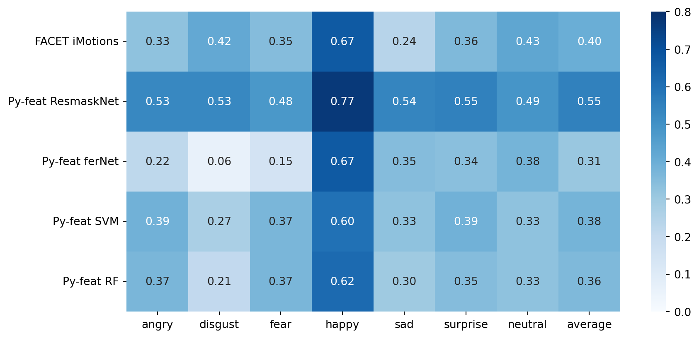
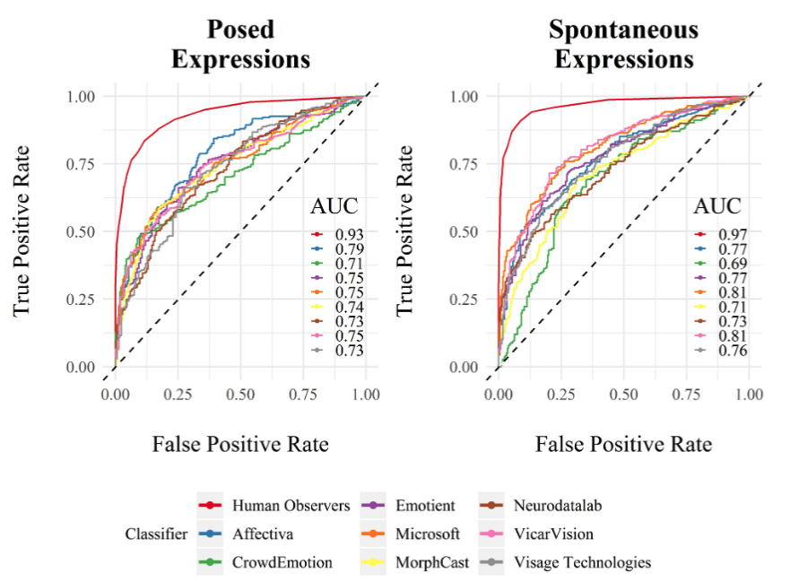

Intro to Py-Feat
py-feat.org
SLAB 04/28/22
History
1969: First system for formally codingfacial movementsin by Swedish anatomist Carl-Herman Hjortsjö1978: Evolved intoFacial Action Coding System (FACS)by Paul Ekman and Wallace Friesen2002: Updated version of FACS with additional codes by Ekman, Friesen, and Joseph C. HagerToday: Multiple FACS variants exist for babies, chimpanzees, macaques, and humans

Facial Muscles and Action Units

Major muscles of the face that form the basis of FACS (Zarins, 2014)
“Classic” CV: HOG Features
- Intuition:
localimageintensity changesandedge orientationsprovide auseful descriptorof object appearance and shape - Extract features using the
gradientorientation in multiple regions of an image; output is ahistogramper image region - Output features -> simple classifier (e.g. SVM, RF, Logistic Regression)


Deep Learning: CNNs
- Given some training labels (e.g. presence of AU), model
automatically learns what features are importantfor prediction (end-to-end training)


Animation


Summary figures

Comprehensive analysis tools

How Good Are Humans at detecting Facial Expressions?

